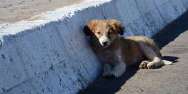
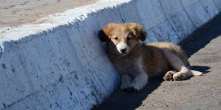

üêæ Presentaci√≥n de Huellitas Sin Hogar
üí¨ Problemática
El abandono de los perros y los perros callejeros
El abandono de perros es un problema creciente en muchas ciudades. A diario, cientos de perros son dejados a su suerte en las calles, sin alimento, refugio ni atención médica. Esto genera consecuencias negativas tanto para los animales como para la comunidad: los perros sufren enfermedades, hambre y maltrato, y en algunos casos pueden representar un riesgo para la salud pública.
Las causas de este problema incluyen la falta de conciencia sobre la tenencia responsable, la reproducción no controlada de mascotas, la ausencia de leyes estrictas sobre el abandono animal y la escasez de recursos para albergues.
 

✅ Solución
Sitio web de información y acción "Huellas de Patas Sin Hogar"
Propuesta de solución digital a través de un sitio web que ofrece:
1. Información educativa: sobre tenencia responsable, esterilización, vacunación y las consecuencias del abandono.
2. Registro de Adopciones: Donde refugios y particulares pueden subir perfiles de perros disponibles para adopción.
3. Guía de Denuncias: con enlaces y contactos para que las autoridades locales denuncien casos de maltrato o abandono.
4. Blog y foros comunitarios: para compartir experiencias, consejos y concienciar.
5. Voluntariado y Donaciones: la posibilidad de apoyar a refugios colaboradores económicamente o con su tiempo.
En resumen, colegas, una plataforma como esta ayudaría a reducir el abandono mediante la educación, la acción comunitaria y las adopciones responsables. Unámonos por un mundo con más empatía por los animales, porque ellos también sienten.

üì∏ Imágenes representativas
Aquí encontrarás fotos que reflejan la misión y el impacto de este proyecto.